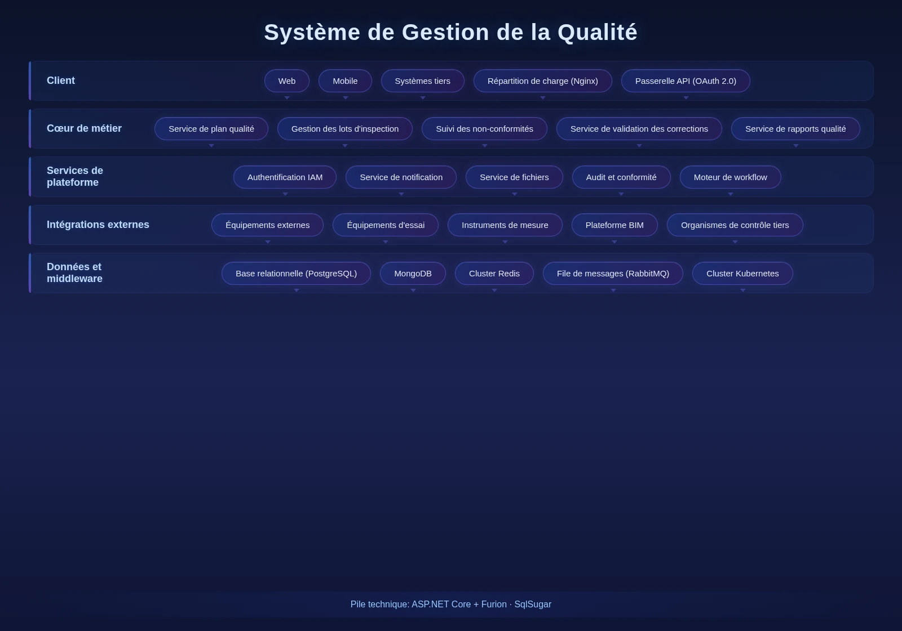

Le Système de Gestion de la Qualité est une plateforme complète pour les projets de génie civil. La qualité de construction affectant directement la sécurité et la durée de vie, et la gestion traditionnelle ayant du mal à détecter et corriger les problèmes à temps, le système couvre l'inspection de processus, l'acceptation du premier article, la supervision sur site et la traçabilité récompenses/sanctions, aidant à détecter et corriger les problèmes à temps, à garantir la conformité aux normes techniques et à favoriser l'amélioration continue.

Caractéristiques Clés
Le système couvre inspection, récompenses/sanctions, premier article et supervision sur site — quatre modules formant une gestion qualité à cycle complet.
Inspection Qualité
Inspection qualité des processus avec enregistrement et suivi de rectification des problèmes.
Récompenses/Sanctions
Enregistrement des sanctions liées aux problèmes et des récompenses pour atteinte aux normes.
Premier Article
Acceptation et archivage spécial pour le premier échantillon avant production en série ; référence qualité pour la suite.
Supervision Sur Site
Supervision sur site pour les processus critiques et les opérations à haut risque.
Architecture du Système

Quality Closed Loop
Architecture qualité à cycle complet : inspection → enregistrement problème → rectification → vérification. Intégration avec le Système BIM léger pour marquer les emplacements dans les modèles 3D, avec enregistrements bilingues (chinois/anglais) répondant aux normes chinoises et locales nigérianes.
Scénarios d'Application
Adapté à l'inspection qualité des processus, à l'acceptation du premier article, à la supervision des processus critiques et à la traçabilité récompenses/sanctions.

Inspection des Processus
Inspection qualité des processus avec enregistrement et boucle de rectification, garantissant la conformité à chaque étape.

Acceptation du Premier Article
Acceptation et archivage spécial pour le premier échantillon avant production en série, servant de référence qualité.

Supervision des Processus Critiques
Supervision sur site pour les processus critiques et à haut risque, garantissant la qualité de construction.

Traçabilité Récompenses/Sanctions
Enregistrement des sanctions et récompenses liées à la qualité, attribution claire favorisant l'amélioration continue.
Avantages et cas
Conformité aux doubles normes
Satisfaire aux exigences doubles des normes techniques de l'ingénierie chinoise et des normes locales nigérianes, adaptée aux scénarios de gestion de projets d'ingénierie transnationaux.
Localisation liée à la BIM
Intégré au système BIM allégé, il marque avec précision l'emplacement des problèmes de qualité dans le modèle 3D, permet une localisation intuitive et un suivi visuel des corrections.
Enregistrement bilingue chinois-anglais
Prise en charge du remplissage des enregistrements de qualité bilingues chinois-anglais et de la sortie de rapports, satisfaisant aux besoins de collaboration des gestionnaires chinois et étrangers.
Gestion du système de première pièce
L'acceptation de la première pièce sert de norme de référence pour la construction ultérieure, contrôlant la qualité de la construction à la source : les pièces non conformes ne passent pas à la construction en série.
Suivi de la boucle fermée de correction
Boucle fermée sur l'ensemble du processus des problèmes de qualité, depuis la détection, la notification, la correction jusqu'à l'acceptation et la contre-vérification, avec une responsabilité attribuée à chaque personne et un délai imparti.
Inspection périodique des processus de construction
Prise en charge de la configuration de plans d'inspection selon les nœuds des processus de construction, la prise de photos sur site, la signature et la notation sont réalisées en une seule étape, la qualité du processus est contrôlable.
Étude des besoins
Compréhension approfondie du système de gestion de la qualité des projets et des normes de construction, tri des éléments de contrôle de la qualité, des nœuds d'acceptation et des processus de correction.
Déploiement du système
Prise en charge du déploiement local et du déploiement cloud, adaptée aux besoins de gestion de la construction sur site et aux scénarios d'opération hors ligne.
Formation et mise en ligne
Formation hiérarchisée pour les administrateurs, les agents de contrôle qualité et les ouvriers, couvrant la configuration des éléments d'inspection, le remplissage des rapports d'inspection, le suivi des corrections et l'utilisation des rapports.
Acceptation de mise en service
Acceptation en trois phases : test selon le processus de contrôle qualité, vérification de l'intégration BIM, sortie de rapports, pour garantir la stabilité du système avant la livraison officielle.
Gestion de la qualité d'un projet d'immeuble administratif et d'un projet de transport ferroviaire urbain
Contexte : Les grands projets d'ingénierie ont des exigences élevées en matière de qualité de la construction, la détection rapide des problèmes de qualité et la boucle fermée de correction sont essentielles au bon déroulement du projet.
Défis : Les enregistrements papier traditionnels sont faciles à perdre et difficiles à retracer, la description de l'emplacement des problèmes de qualité n'est pas claire, le progrès des corrections est difficile à maîtriser en temps réel.
Solution : Déployer un système de gestion de la qualité, grâce aux fonctions d'inspection périodique des processus, d'acceptation de la première pièce et de supervision sur place, réaliser la détection rapide des problèmes de qualité et la boucle fermée de correction numérique.
Données de résultat : Amélioration de la rapidité de détection des problèmes de qualité, réduction du cycle de la boucle fermée de correction, amélioration continue de la qualité de la construction.
Témoignage client : ——